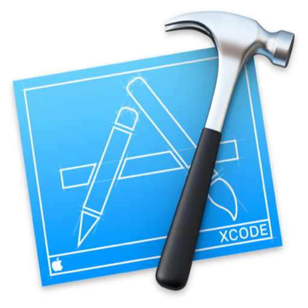
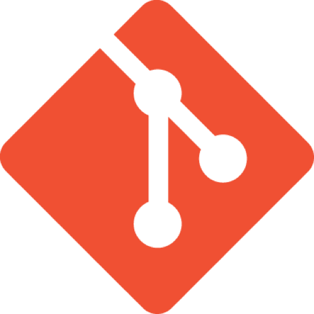

— Skills —

Java
Swift

Python
C

Xcode
Bash Scripting

Git
Android Studio

HTML5

CSS3

Photoshop
Illustrator
I am a third year student studying Computer Engineering at the University of Ottawa. I enjoy solving many different complex problems and I am also interested in artificial intelligence and blockchain technology.
In my spare time, I enjoy spending time with my family and friends as well as playing teamwork oriented videogames such as League of Legends and Counter-Strike: Global Offensive. You can also often find me trying to beat my personal Rubik's Cube solve record, which currently stands at 6.06 seconds!
I am looking for a CO-OP position for the Winter of 2020 where I can apply my problem-solving/coding skills and gain tons valuable experience while proving to be a great asset to the hiring company!
Java
Swift
Python
C
Xcode
Bash Scripting
Git
Android Studio
HTML5
CSS3
Photoshop
Illustrator
Toronto, ON • Summer 2019
Swift 5 Xcode Bash
Here at Rogers, I used Swift programming to maintain apps, fix bugs/crashes, as well as implement features into apps such as 680 News, CityNews, KiSS 92.5, 98.1 CHFI, and many more! A feature that I had a lot of fun with was implementing deep-linking into push notifications so users could immediately access content such as "Breaking News". This is very important as it allows users to quickly and easily access content and instantly become engaged, therefore creating valuable user retention.

This website that is shown here is built from complete scratch! I utilized my experience with design and coding to create a responsive website that showcases what my abilities as a programmer can do for current/future projects.
HTML5
CSS3
JavaScript
jQuery
Photoshop
This app was created as a term-project with a group for my 2nd year course: Introduction to Software Engineering. The application allows an admin to create a list of services where service providers can list their availabilities from. Homeowners can then schedule a repair from specific search queries, as well as rate how well they were accomodated.
Java
SQLite
Android Studio
Photoshop
Illustrator